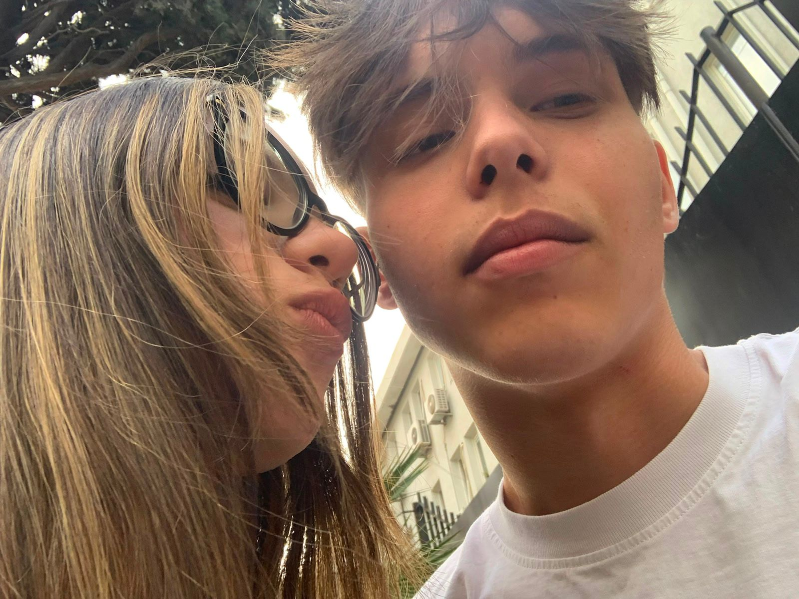
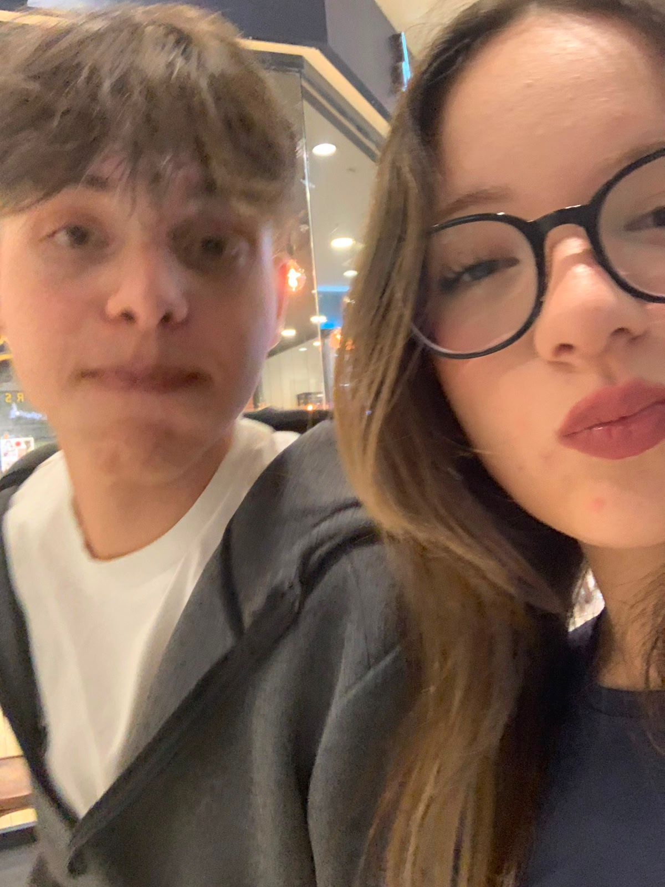
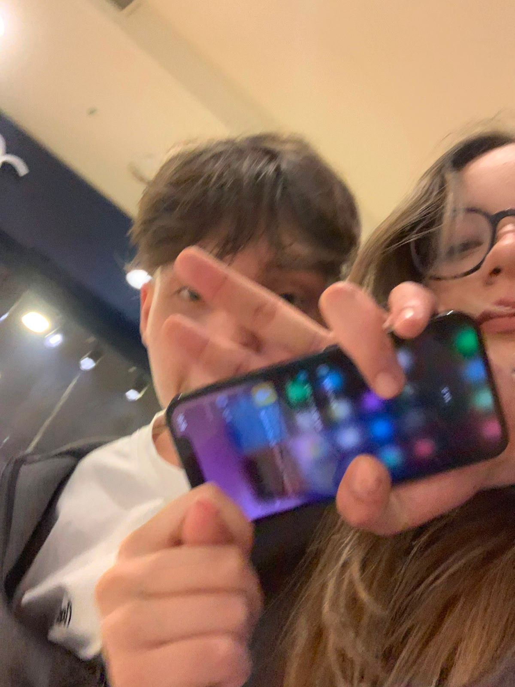
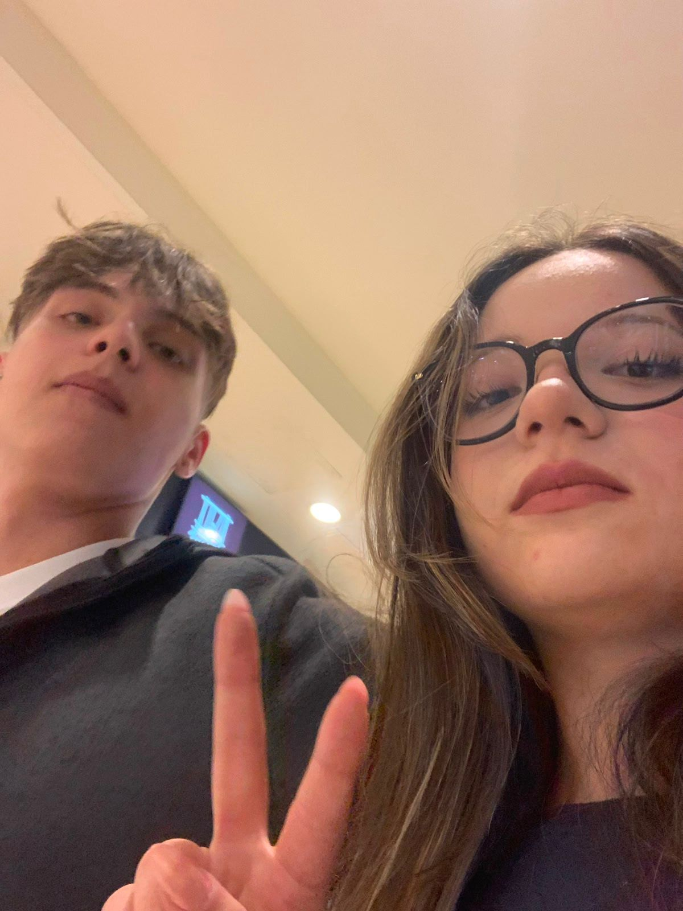
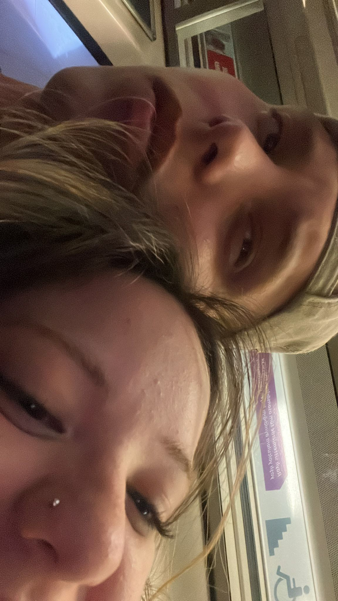
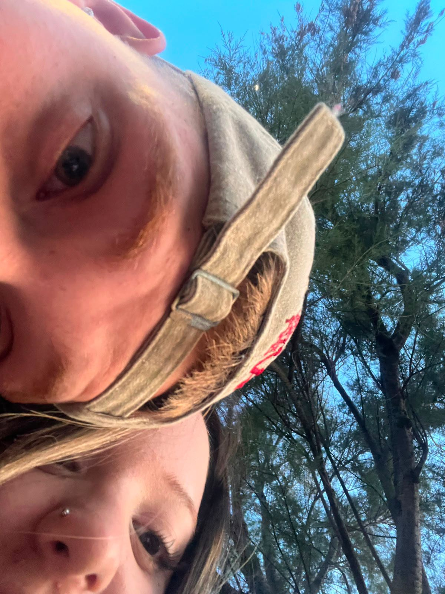
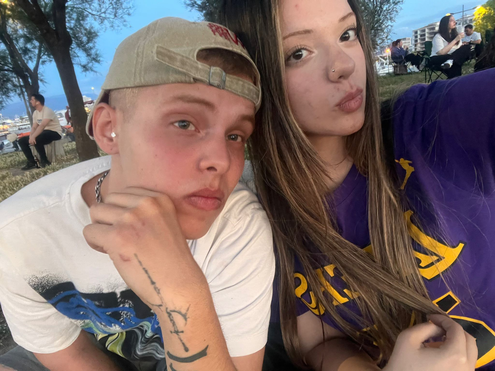
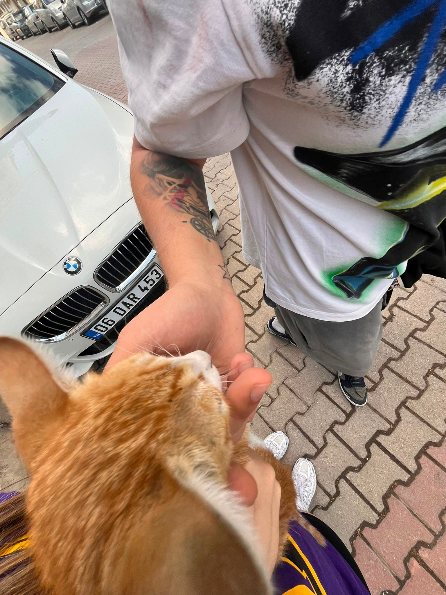
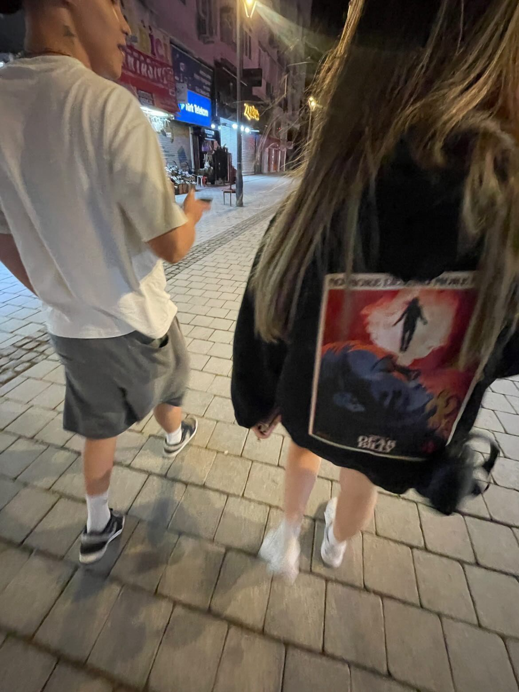
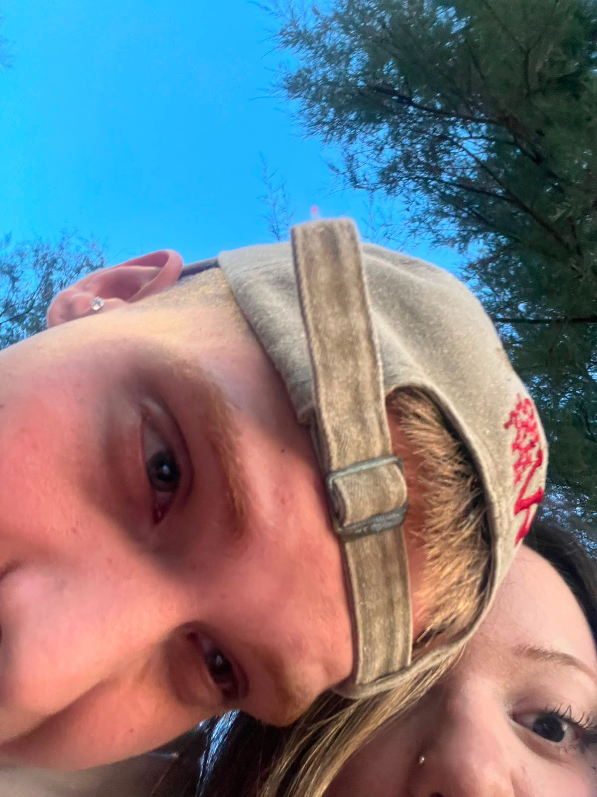

Zaman Tüneli
Nilay & Arda — İyi ki yolum seninle kesişti, iyi ki her anım seninle güzelleşti.
Yollarımızın İlk Kesişimi


Her şey bir sene önce, hayatımın en güzel sayfalarından biri olarak başladı seninle. O zamanlar belki zaman doğru değildi, belki hayatın bize getireceği başka virajlar vardı ve yollarımız bir süreliğine ayrıldı. Ben senin hayatından çıktım ama kalbimden, aklımdan o gülüşünü, o sesini hiç çıkaramadım. Aradaki mesafeler veya geçen zaman, bendeki yerini bir saniye bile azaltamadı. Hep bir yerlerde eksik kaldığımı hissettiğim, o sessiz dönem...
Aklımın Sende Kaldığı O Anlar


Yan yana olamadığımız o günlerde bile, ne zaman içim sıkışsa ya da güzel bir şey görsem ilk aklıma gelen hep sendin. İnsan kalbindeki gerçek sevgiyi galiba en çok yoklukta anlıyormuş. Geçen zaman bana sadece bir şeyi kanıtladı: Benim yerim senin yanınmış sevgilim.
Yarım Kalan Hikayenin Tamamlanması

Hayat bize çok güzel bir şey öğretti sevgilim: Gerçek bağlar ne kadar koparsa kopsun, dönüp dolaşıp yine birbirini bulurmuş. Biz o yarım kalan hikayeyi bir kenara atmadık; tam tersi, kaldığımız yerden çok daha güçlü, çok daha ne istediğini bilen iki insan olarak yeniden bir araya geldik. Sana tekrar sarıldığım, elini yeniden tuttuğum o an, evime geri dönmüş gibi hissettim. Bu sefer ne yarım kalacağız, ne de birbirimizi kaybedeceğiz.
Gülüşünün Bendeki Karşılığı


Seninle yan yana olmak sadece romantik bir histen ibaret değil; seninle çocuk gibi eğlenebilmek, en saçma şeye bile saatlerce gülebilmek dünyadaki en büyük lüksüm. Dünyanın en güzel detayı olan gülüşün, benim bu hayattaki en huzurlu sığınağım.
Ömrümün Sonuna Kadar Seni İstiyorum



Ve işte bugün... Karşındayım ve bu sefer sadece bugünü değil, gelebilecek tüm yarınları seninle geçirmeye söz veriyorum. Seni sadece hayatımın bir dönemi için değil, ömrümün yettiği son ana kadar hayatımda istiyorum. Dünyanın en inatçı ama en dünyalar tatlısı kadını; iyi ki pes etmedik, iyi ki birbirimizin kalbini yeniden bulduk. Bu site, seninle kuracağımız o sonsuz ve huzurlu geleceğin sadece küçük bir başlangıcı olsun. Seni her şeyden çok seviyorum.